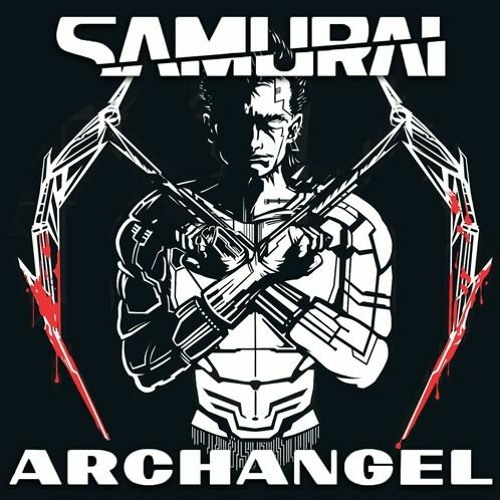
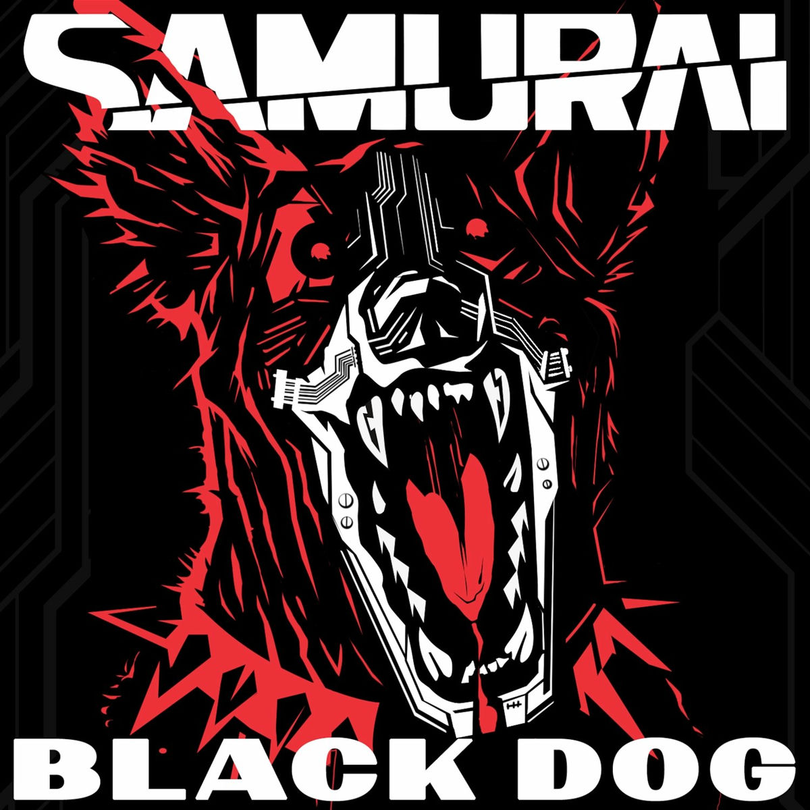
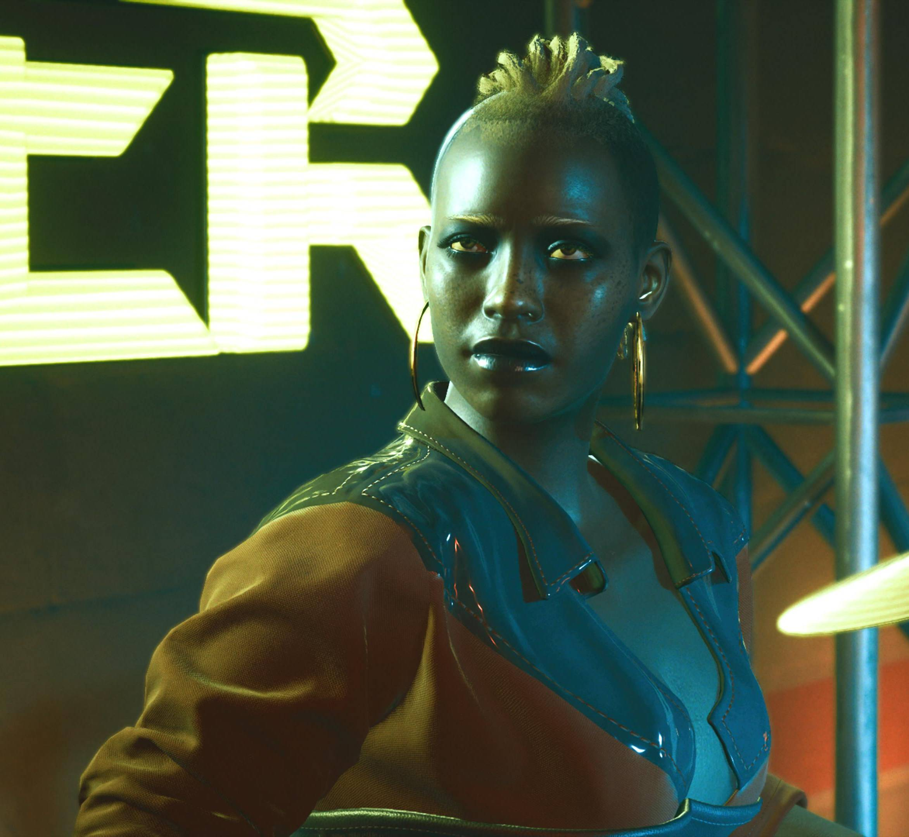

W latach 2003-2008 wydano łącznie sześć albumów. Trzy z nich to nagrania studyjne, a pozostałe trzy to nagrania koncertowe i jam sessions.
W latach 2003-2008 wydano łącznie sześć albumów. Trzy z nich to nagrania studyjne, a pozostałe trzy to nagrania koncertowe i jam sessions.
Never Fade Away
Napisany i skomponowany przez Johnny'ego Silverhanda utwór „Never Fade Away” był częścią jego solowego albumu z 2013 roku, „A Cool Metal Fire”, wydanego przez wytwórnię Universal Media. Jakiś czas później wydał ten utwór ponownie na albumie zatytułowanym „Never Fade Away”. Ostatecznie, po reaktywacji Samurai'a, nagrano kolejną wersję z resztą zespołu.

Johnny Silverhand był legendarnym rockerboyem i frontmanem zespołu Samurai. Jego muzyka była agresywnie antykorporacyjna i rewolucyjna. Samurai zyskał ogromną popularność, zanim rozpadł się w 2008 roku. Johnny później kontynuował karierę solową, wydając albumy o zabarwieniu politycznym. Utwory takie jak Chippin' In i Never Fade Away stały się hymnami rebeliantów.
Kerry Eurodyne był rockerboyem, wokalistą i gitarzystą w zespole Samurai. Pomógł ukształtować wizję zespołu, by zmieniać świat za pomocą muzyki. Po rozpadzie Samurai, kontynuował karierę solową, z wieloma hitami i platynowymi albumami. Intensywnie koncertował i przez całe życie wywierał wpływ na muzykę rockową.


Nancy Hartley była klawiszowcem zespołu Samurai przed 2008 rokiem. Grała w Samurai u boku Johnny'ego Silverhanda i Kerry Eurodyne. Zespół Samurai rozpadł się, gdy Nancy spędziła siedem miesięcy w więzieniu w 2008 roku. Po wyjściu na wolność przyjęła pseudonim Bes Isis i porzuciła muzykę na rzecz mediów.
Denny była perkusistką i rockerboyem zespołu Samurai. Grała z Samurai aż do rozpadu zespołu w 2008 roku. Po rozpadzie dołączyła do zespołu Mastermind. Jej kariera muzyczna koncentruje się na jej roli w Samurai i późniejszych projektach.

Henry był basistą i rockerem zespołu Samurai aż do jego rozpadu w 2008 roku. Grał na basie u boku Johnny'ego Silverhanda i reszty zespołu Samurai. Po rozpadzie Samurai porzucił muzykę, aby pracować nad prototypem, co uszkodziło mu mózg. Jego kariera muzyczna koncentruje się na czasie spędzonym w Samurai'u.